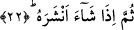

Ancak onları daha da geliştiren akıldı.
“Öldürülme”nin nimetten sayılması, mümine göredir. Çünkü mümin, ölüm sâyesinde
dünya hapishanesinden kurtuluşa erer. Yine ölüm bir lütuf, ebedi hayata ve dâimi
nimetlere kavuşmadır. Ancak o, kötü inancından ve kötü amelinden dolayı kâfir
hakkında bütün belâ ve sıkıntıların anahtarıdır.
Bazı tefsirlerde ifâde edildiğine göre âyette “imâte/canın alınması” fiilinin
zikredilmesinin sebebi, ya bunun kabre konulmanın bir mukaddimesi olmasından da
korkutmak ve dünya hayatının fâni, sonunun ölüm olduğunu hatırlatmak içindir. Nitekim
İmam Şafii şöyle bir beyit söyler:
Yeryüzünde böbürlenme, yürüme gururla!
Yakındır, az kaldı, gireceksin toprağa!
Âyetteki “imâte/öldürme” fiilinin, insanları ölüme hazırlanmaya teşvik amacıyla
getirilmiş olması da mümkündür. Bunun yanında “imate” fiiliyle, bundan sonraki âyette
gelecek olan “enşera/diriltti” fiili arasında bir “mukabele/karşılık gelme” vurgusunun
sağlanması da gözetilmiş olabilir. Bu mukabele, Allah’ın kudretinin kemaline ve
hikmetinin ne kadar mükemmel olduğuna vurgu sağlamak içindir.
22. Sonra dilediği bir vakitte onu yeniden diriltir.
Allah insanı diriltmeyi, ona can vermeyi dilediği zaman diriltir ve kendisine can verir.
Bu âyet-i kerimede “diriltme”nin Allah Teâlâ’nın dilemesine bağlanması, bu olayın
vaktinin kendiliğinden belirli olmadığına; bilakis bunun Allah’ın dilemesine bağlı
olduğuna işâret etmektedir. Oysa ölüm vakti böyle değildir. Çünkü biz -söz gelimi- şu
anda yaşayan herhangi bir kimsenin ömrünün yüzelli yılı geçmeyeceğini kesinlikle
söyleyebiliriz. Oysa hiç kimse dirilme olayını bu derece kesinlik içinde “filanca zaman
olacak” diye söyleyemez.
Bazı âlimlerin görüşüne göre ölüm olayının da belli bir süresi ve sınırlanmış bir
müddeti vardır. Şu halde ölüm olayının da aynı şekilde kendi başına muayyen olduğu
nasıl söylenebilir ve bir kimsenin filanca yaşa geldiğinde mutlaka öleceği kesinlik
içinde nasıl ifâde edilebilir? Aynı şekilde ölüm olayının sırf Allah Teâlâ’nın dilemesine
bağlı olmadığı nasıl ileri sürülebilir? Her halde bu âyette dirilmenin Allah Teâlâ’nın
dilemesine bağlanması, ölümün de aynı şekilde O’nun dilemesine bağlı olmasıyla
kayıtlanmasına aykırı değildir. Zira Allah açısından zaman diye bir kavram söz konusu
değildir.
Ölüm, kıyamet öncesi vuku bulan olaylardan birisidir. Bu nedenle Peygamber